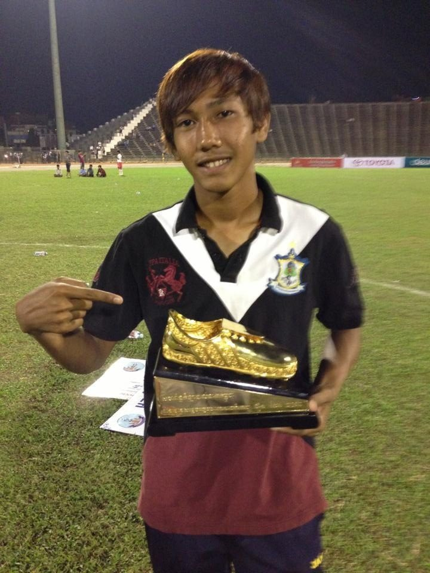

Jannik Sinner Withdrawn From 2027 Australian Open Following Right Knee Surgery
Tennis Australia confirms the two-time Melbourne champion will skip January's Grand Slam tournament to continue his recovery.

David Beckham Surprises 39 Youth Players at Singapore Football Clinic
The former England captain launched Community Chest's Sports for Good initiative alongside local internationals Hassan Sunny and Izairida Shakira.

Chan Vathanaka: The Kampot Prodigy Who Put Cambodian Football on the Regional Map
From Kampot to Japan and the Cambodian Premier League scoring record, then two ACL tears: the story of Cambodia's most prolific forward and the comeback he is still writing.

Jayson Tatum Pours in 41 Points as Celtics Hold Off Wizards 131-116 to Snap Four-Game Skid
Boston built a 31-point halftime lead behind a 46-point second quarter before weathering Washington's late rally to remain unbeaten in NBA Cup play.

Arthur Rinderknech Denies ITIA Anti-Doping Charge Over Alleged Test Refusal
The French world No. 57 rejects the allegations on social media and heads to an independent tribunal without a provisional ban.
Top stories

Former Singapore Captain Rosnani Azman Retires from International Football
The 29-year-old defender steps aside after 58 caps, an overseas career in Japan and Australia, and over a decade of service to Singapore.

Lehecka and Machac Sweep Canada to Send Czechia Into Davis Cup Semi-Finals
Captain Tomas Berdych guides Czechs to their first Davis Cup final-four appearance in 12 years with a 2-0 quarter-final triumph in Bologna.

Joseph Schooling's Journey: From Childhood Dream to Singapore's First Olympic Gold
How family sacrifice, American training and an Olympic record over Michael Phelps shaped the life of Singapore's greatest swimmer.

From Heartbreak in London to History in Rio: The Life of Hoang Xuan Vinh
Overcoming childhood loss, severe nearsightedness and agonizing near-misses, the army officer delivered his country's first Olympic gold medal.

Tian Bingyi Appointed China Badminton Head Coach for Los Angeles 2028 Cycle
The 63-year-old former world champion takes the helm as two-time Olympic gold medallist Zhang Nan joins the national coaching setup.

Kamila Valieva Ruled Out of Russian Figure Skating Championships in Chelyabinsk
The 20-year-old was omitted from the preliminary entry list after doctors restricted her training workload following health issues.
FootballMore →

BasketballMore →
TennisMore →
Combat sportsMore →


MotorsportMore →

Olympic sportsMore →

Ice hockeyMore →


Features
Chan Vathanaka: The Kampot Prodigy Who Put Cambodian Football on the Regional Map
From Kampot to Japan and the Cambodian Premier League scoring record, then two ACL tears: the story of Cambodia's most prolific forward and the comeback he is still writing.

On This Day in 2013: Magnus Carlsen Dethrones Viswanathan Anand in Chennai
The 22-year-old Norwegian grandmaster secured a 6½–3½ victory in Game 10 to claim his first undisputed world chess championship.